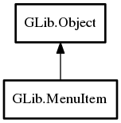

MenuItem
Object Hierarchy:

Description:
public class MenuItem :
Object
MenuItem is an opaque structure type.
You must access it using the functions below.
Content:
Creation methods:
Methods:
Inherited Members:
All known members inherited from class GLib.Object